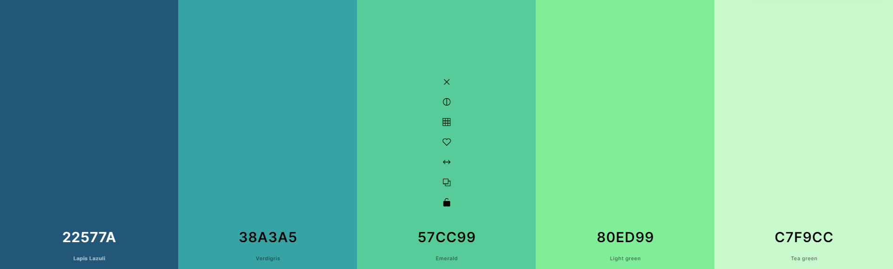
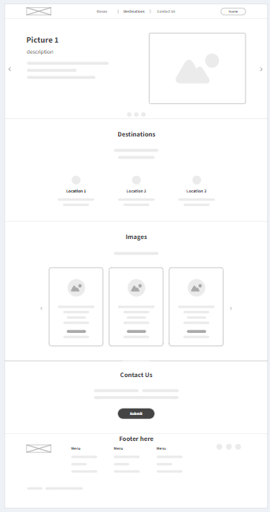
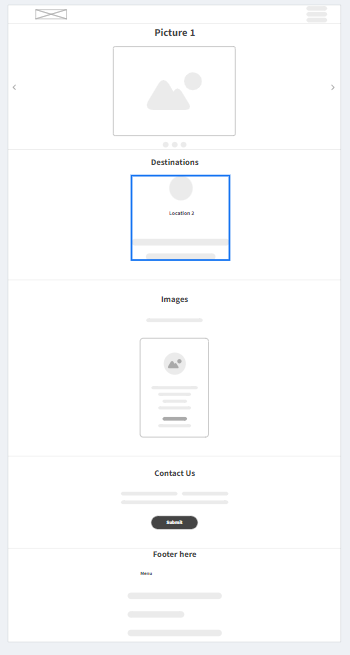

Name: Davao City Nature Escapades
Davao City is renowned for its rich natural landscapes and biodiversity, offering destinations that cater to nature enthusiasts. Highlighting these locations provides valuable information to both locals and tourists, promoting eco-tourism and environmental awareness. By showcasing the city's natural attractions, the website aims to encourage sustainable tourism practices and support local conservation efforts. The subject was selected to share the natural beauty of Davao, making it accessible and appealing to a wider audience.
The website will serve as a guide to nature lovers and tourists interested in exploring the natural beauty of Davao City. It will feature detailed descriptions, images, and visitor information for various nature-type destinations in the city. Each listing will include highlights of the place, activities available, and tips for visitors. The website will cover a range of natural attractions, from parks and wildlife centers to mountains and beaches, ensuring a complete resource for anyone planning a nature-focused visit to Davao.
What are the must-visit nature spots in Davao City?
What activities can I enjoy at each nature destination?
How can I get to each nature attraction from the city center?
The chosen colors are: here.
Oswald
This font I am using is Oswald.
This font I am using is Open Sans.
This is the goolgle font link: oswald, open sans, san serif
web wireframe
mobile wireframe
